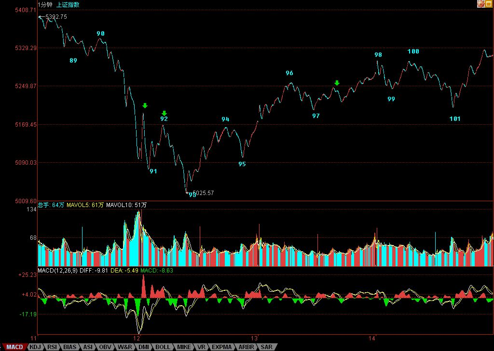

下周焦点：能否破坏周K线顶分型
2007/9/14 15:33:01
显然，本周如期出现周K线顶分型，而且制造了一次绝妙的短线机会。那么，下周就在于，能否破坏这周K线顶分型。看过本ID课程的都知道，周K线顶分型出现后，如果在5周均线处得到支持不有效跌破，那么，该顶分型只制造一个小级别调整，不会出现周K线上的笔调整那样的大级别调整。因此，下周的走势十分明确，下面就看5周均线的支持度能否制造该顶分型的破坏。
小级别图上，今天的走势在昨天已经明确说过，就是形成1分钟中枢，然后根据该中枢的震荡情况决定行情的发展。今天的走势，其实就干了这样一件事情。下周一的走势最简单，就是98到101这1分钟中枢究竟是先有第三类买点还是先有第三类卖点，如果是前者，那么这个1分钟的向上走势将延续，顶分型的破坏的可能性极大。如果出现后者，那么二次探底就不可避免，5周均线将继续受到考验。
这两天的图形，完美地演绎着本ID的理论，从中可以看出，一个线段上涨如何演化出一个1分钟走势类型，后面，继续看这走势类型如何生长，到最终的完成。如果你真明白本ID的理论，看行情的走势，就如同听一朵花的开放，见一朵花的芬芳，嗅一朵花的美丽，一切都在当下中灿烂。
周末，让股票豆腐、磨墙去吧。
先下，再见。

回复